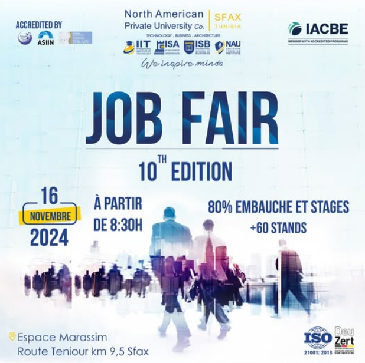
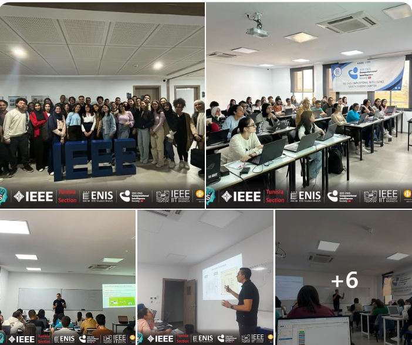
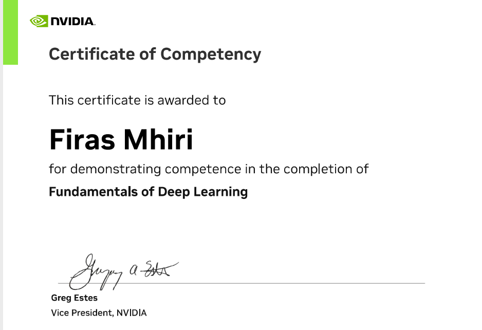
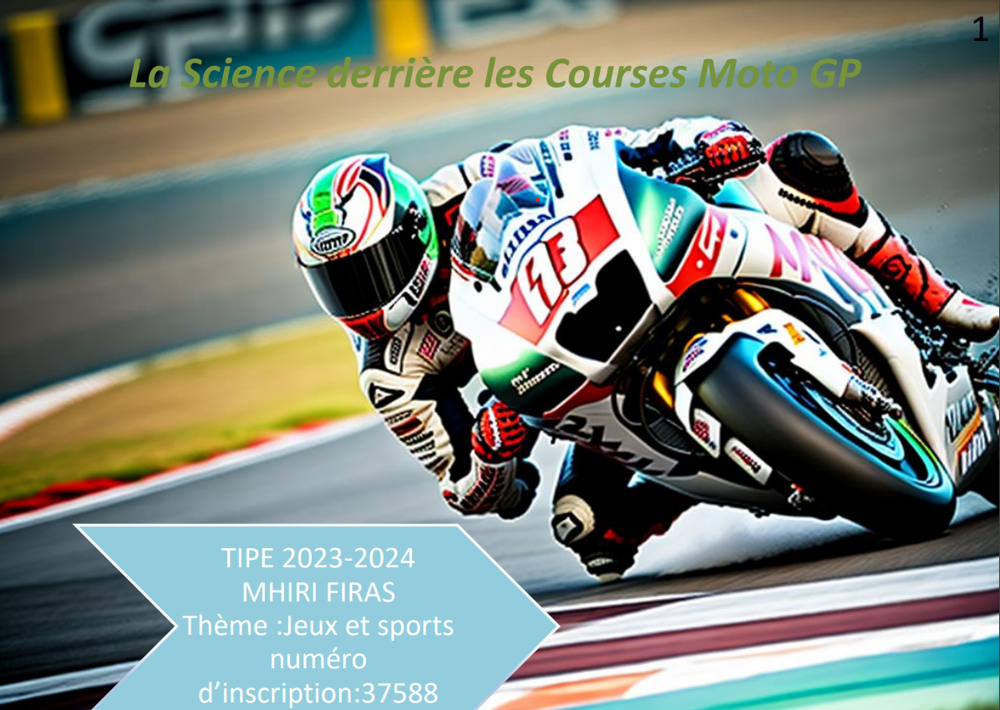

| j'ai participer a IEEExtreme 18.0 selon le nom du groupe tinktank et une expérience magnifique | |
|---|---|
| j'ai participer a job faire et étais une bonne expérience quand la recontre des sociéter et connue de plus le domaine professionel et les compétences nécessaire pour travailer |  |
| j'ai participer a formation certifier de deep learning j ai mieux comprendre comment les couches se forme et les différents etapes pour creé un raiseau dure qui verfie les besoins |   |
| J'ai participé à TSYP, où mon défi consistait à créer un module d'IA capable de détecter les malwares et de protéger efficacement les ordinateurs. | click on it |
| Lors de mon parcours dans les classes préparatoires pour passer le concours francais on a un projet TIPE J'ai fait ma présentation sur Mécanique feluide comment une moto passe un virage avec une vitesse assez grand sans glisser et comment diminuer la durée passer dans ce virage |
 click on it |